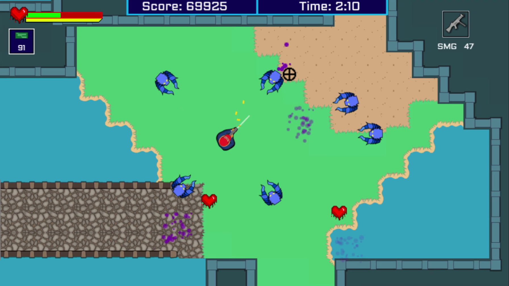

Wacktory™ is a new take on cooperative gameplay that bridges the gap between virtual reality and traditional couch co-op gaming. Thrown into a factory full of chaos and OSHA violations galore, two couch players must work together with their VR counterpart to make cubes and fulfill orders for trucks before time runs out.
Wacktory was created by us as a capstone project for the Computer Game Design department at the University of California, Santa Cruz. It was demoed at the 2019 UCSC Games Showcase where all of the games developed by students at the university over the 2018-2019 academic year were showcased publically across a two day event. Out of the 50+ games showcased, our game was awared the Grand Prize for "Best Overall Experience" and recognition for top 3 placements for the Peer Choice and Design Innovation awards.
Roles on the project:
Served as Lead Programmer and Technical Artist for a team of 12, implementing and overseeing the production of core game systems.
Responible for the implementation of all Virtual Reality mechanics and interactions.
Created our game's shader system from scratch to give the game its unique cartoony aesthetic.
Tested and finalized game builds at various stages of production, including submission of the final build to Steam.
Alien Invasion (JS) - 2017
Alien Invasion is a top-down, rogue-lite shooter where must survive waves of enemies while trying to escape the city. Built with the Phaser framework for JavaScript, Alien Invasion offers a fast paced shoot-em-up experience playable directly from your web browser and is available to play below!
Developed as a team of five at UCSC, we were tasked with creating any game whose theme relates to current events. With the presedential election being the forefront of current events at the start of 2017, Alien Invasion is a satirical illustration of Donald Trump's approach to external affairs, or at least how many citizens perceive his policies.
Roles on the project:
Created the majority of art assets including the player, enemies, and environment.
Level design and implementation of tilemap based functionality of displaying levels
Functionality for weapon handling and tracking.

Falling Up (JS) - 2017
An endless runner game created as a solo project over the span of a week to familiarize myself with the Phaser framework for JavaScript. The level is procedurally generated from predefined segments and checks to ensure that every pattern is possible to overcome. Try to stay alive as long as possible by inverting gravity to avoid running/falling off the screen. The game is fully playable in-browser and is available to try below! *Artwork and sounds taken from opengameart.org
Starcraft II AI (C++) - 2018
Courtesy of Blizzard Entertainment, we utilized Starcraft II's open API to develop our very own Starcraft II bot. Using this API, we employed a behavioral tree approach to implementing our AI where our bot would prioritize tasks based upon what it knows about the game state at any given time. As Starcraft II is a game of imperfect information due to its "fog of war" mechanic for hiding enemy units out of the range of view, we taught our AI to seek out information in real-time to decide wether or not its better to attack, expand, defend, etc.
We set out with the goal of having our AI beat Blizzard's easy bot and focused specifically on having our bot play as the Terran race to do so. In the end, our AI is able to confidently and consistently beat Blizzard's official bots set to medium difficulty. Our AI works on any map and against any opposing race with the only restriction being our bot must play the Terran race. Check it out in action below!
Roles on the project:
Handled enemy base scouting procedure to learn where to attack.
Implemented combat unit micro play for fighting enemy's army which included advanced techniques such as stutter stepping for marines.
Recedence (GML) - 2017
Recedence is a simple combat-driven platformer built in Gamemaker Studio by a team of two as a means to practice game development in a team environment. While the game itself isn't anything impressive in its own light, the game served as a core foundation for learning git file management and splitting tasks between people.
Role on the project:
Artwork and level layout for all four levels.
AI pathing and combat towards the player.
Virus Assault (Blitz Basic) - 2015
Developed with the help of two friends in high school as my first "complete" video game, Virus Assault is a top-down tower defense game where you play as an IT worker named "Bob" who must protect his system from the infiltrating viruses. Created for the 2015 Future Business Leaders of America (FBLA for short) Leadership Conference's state competition for the event "Computer Game & Simulation, our team showcased our game live in front of a panel of judges. Here, we achieved first place in the state over all the other competing schools. This qualified us to present at the National Leadership Conference in Chicago where only the top three teams from each state could advance. Out of the 75 teams who qualified and competed nationally, we placed fifth in the nation.
I handled for all of the coding for this project as well as some of the artwork.